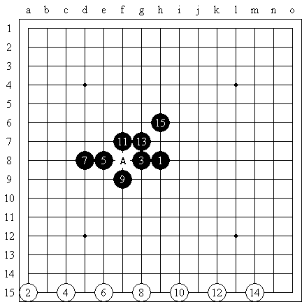
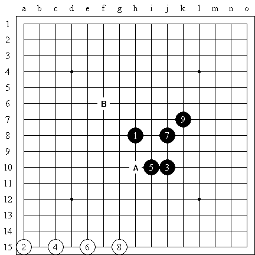

#2 Re:禁手与假禁手 作者：心上人 发表时间：2010-5-19 16:03:50
正确的判断禁手很重要。
#3 Re:禁手与假禁手 作者：淡红的秋樱 发表时间：2010-5-19 16:35:36
往大里说就是人治与法制，主张与举证。如果我是裁判，我最喜欢吃完被告吃原告了。
#4 Re:禁手与假禁手 作者：长官 发表时间：2012-11-12 20:36:24
hahahaha
五子棋规定，黑棋“三三”，“四四”，“长连”是禁手。（白棋没有禁手，黑棋的三三禁手指的是黑棋一子落下，同时形成两个或两个以上的活三。）
那么怎么会出现假禁手呢？原因有一条，当五连和禁手同时出现的时候，争执不下的时候，我们人为规定，五连胜。所以之前的禁手就不被承认，称为假禁手。

比如说，A点就属于“假禁手”。
/**********************************************************************************************
有些人不明白，为什么会产生一个叫做“假禁手”的说法。他的概念中，禁手和五连同时存在，当对手指出他禁手时，他还需要指出我是五连了。那么这种判断滞后的情况必然会与要不要下A点相互矛盾。他的概念中A点既是胜点，也是败点，这本身是互相矛盾的。这个矛盾来自于理论与实际的矛盾。
理论上和实际中自然会有些差别。
理论中，五连自然就是结束
实际中，五连变六连也不是没有可能。
理论中，禁手也是结束。
实际中，你必须要指出来。
理论和实际没有必要混淆一谈，实际操作为了简便，偷下懒也是合情合理的。
所以，最终的判断的依据不能是某一方看不到，看不清。因为看不到，看不清，是短暂的，总会一天会看清的。所以反向推理的最终结果是，如果最终判定是黑胜，那么必然会导致前面黑棋A点也可行。既然A点对于黑棋可行，那么自然就不是禁手点了。
所以，假禁手 就是承认五连最大的变相说法。
**************************************************************************************************************/
已经存在五连之后的禁手的问题不应该被讨论。因为没有比赛的意义。
/**********************************************************************************
有人说：不支持说只要一方五连对局就自动结束，而是必须指出
下到五连都还不结束，继续下下去的，结果对手也五连了，然后同时宣布胜利。这有意思吗？
是否是禁手的点，是针对没有落子的空地，所以必然会涵盖棋盘上所有的空地，来判断一个空地上是否能与棋盘上的其他棋子形成五连或禁手可能性。所以此处的空地有禁手的判断的意义，上图A点属于假禁手。但在时间上却没有比赛的意义。但如果存在五连还不结束，你有那闲工夫，干点别的不好吗？
*****************************************************************************************************/
注意了。这个A点是四四禁手。没有任何问题，下面我们推广一下，为了出现更复杂的情况。
这个A点也是四四禁手。
通常的禁手理论中都只有两条线。此处出现了三条线。一般没有学习过禁手理论的人，到这个地方，一定会傻眼了。
有些人认为这个B是三三禁手，因为他的眼中只有两条线。
但正确的答案是，B是假禁手点。为什么此处的禁手点又是假的呢？
答案就是我们一开始就讨论了如果B点如果存在的情况下，c点是不能下的。既然C点是不能下的。那么就承认了B，9，11三个点在取胜的道路上是不通的。既然承认了B，9，11对取胜无效。那么只有B，7，5一个三是有效的。所以正确的判断方式是看效果，而不仅仅看形式。
换句话说。这里的情况，不能和四四禁手所矛盾。你承认了四四禁手，那么此处的B点就是假禁手了。
所以当出台禁手取胜与五连取胜矛盾时，人为规定，五连有效。当三三禁手和四四禁手出现矛盾时，规定四四禁手有效。

现在你知道了如果黑棋B点存在，A点就不是禁手。
现在出一个抽象的问题来考你，如果在一盘棋当中，有一个点恰巧是你的禁手点，对方准备抓这个禁手点。请问，解禁的点必须在这个禁手点的横线，竖线，斜线上吗？
思考过后，你会发现，如果这个禁手点恰巧是图上的A点，而你可以通过B点来解禁。这个点恰巧不必再A点的横线，竖线，斜线上，是不是很有趣呢？这是五子棋解禁的一个技巧，四四可以解三三禁手。同理还有长连可以解四四禁手， 往大里说就是人治与法制，主张与举证。如果我是裁判，我最喜欢吃完被告吃原告了。
#2 Re:禁手与假禁手 作者：心上人 发表时间：2010-5-19 16:03:50
正确的判断禁手很重要。
#3 Re:禁手与假禁手 作者：淡红的秋樱 发表时间：2010-5-19 16:35:36
#4 Re:禁手与假禁手 作者：长官 发表时间：2012-11-12 20:36:24
hahahaha